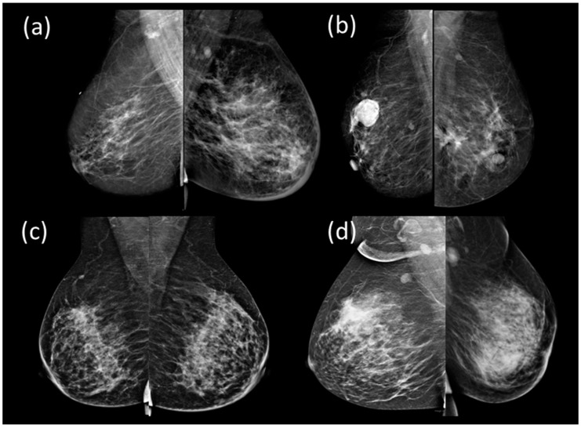
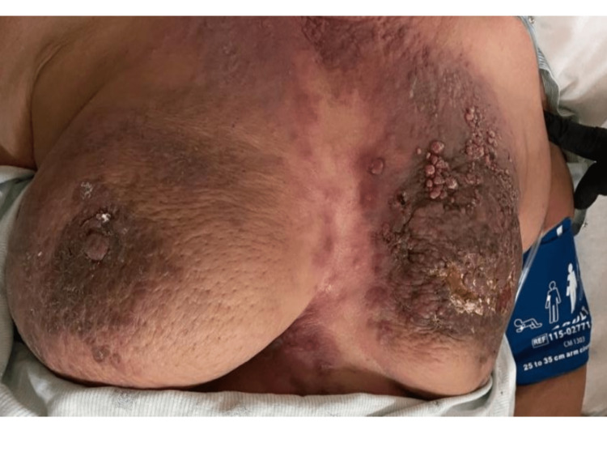
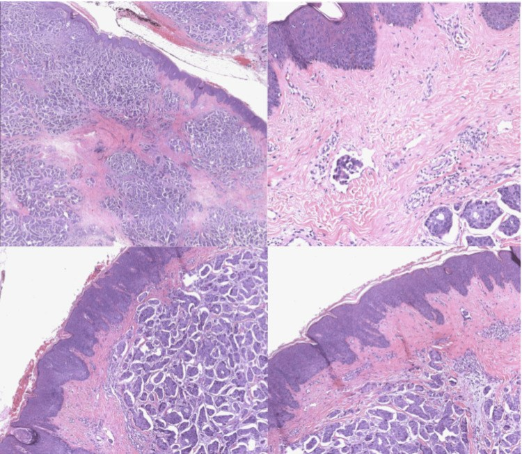
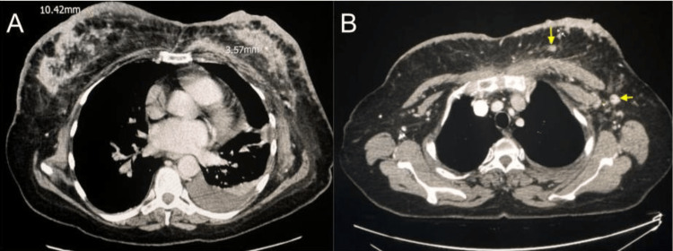
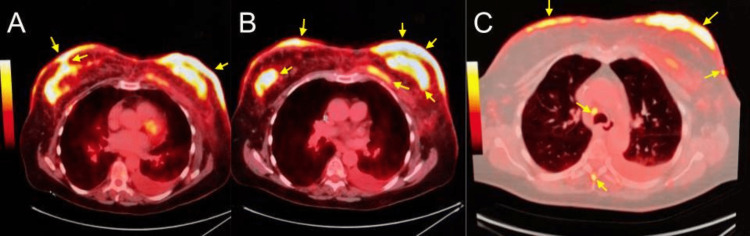
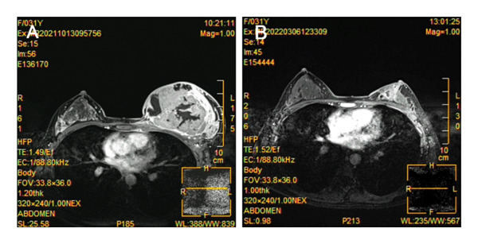
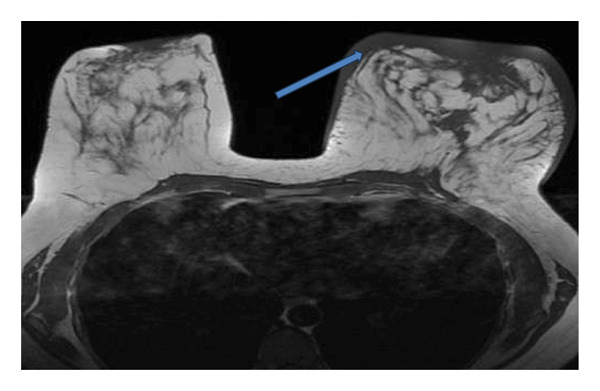

1616 — Ung thư vú thể viêm (inflammatory breast cancer, IBC): "viêm" mà không phải viêm / Inflammatory breast cancer
Tags: pattern:day-da-lan-toa pattern:phu-vu pattern:khong-khoi pattern:viem-gia vung:vu vung:thanh-nguc score:TNM-AJCC8 score:BI-RADS protocol:MRI-vu protocol:sinh-thiet-da protocol:PET-CT incidentaloma:day-da
Mức chắc chắn (certainty): tổng hợp y văn (literature synthesis) — đọc trực tiếp toàn văn các bài mở qua Europe PMC/PMC (Cureus 2023; Sensors (Basel) 2022;23:64; Case Rep Med 2026; JAMA Netw Open 2025; Front Oncol 2026; Gland Surg 2025; Radiol Res Pract 2026), có 2 ca nguyên văn dùng cho Blind Quiz (ảnh CC BY 4.0). Số liệu dịch tễ lấy từ phần Introduction/Discussion của các bài gốc.
1. Tổng quan — vì sao da đỏ mà mô bệnh là ung thư, và vì sao "không thấy khối" lại nguy hiểm hơn
- Định nghĩa (AJCC): IBC là thể lâm sàng — đỏ da (erythema) + phù (edema) + da cam (peau d'orange) trên ≥ 1/3 vú, khởi phát < 6 tháng tính từ triệu chứng đầu tiên, thường KHÔNG có khối rõ bên dưới. IBC được xếp T4d và luôn là giai đoạn III khi chưa di căn xa (M0). Đây là điểm khác biệt cốt lõi: chẩn đoán IBC là chẩn đoán LÂM SÀNG, không phải chẩn đoán mô bệnh học.
- Tần suất và tiên lượng (định lượng):
- IBC chiếm 1–5% ung thư vú mỗi năm nhưng tới ~10% số ca tử vong do ung thư vú (JAMA Netw Open 2025, 6.945 bệnh nhân IBC không di căn xa).
- Tại Hoa Kỳ: 2% các ung thư vú xâm lấn; 2–4% tuỳ nguồn; 7–10% tử vong do ung thư vú ở các nước phương Tây (Gland Surg 2025).
- Sống trung bình (median OS): 4,75 năm với IBC so với 13,40 năm với ung thư vú không-IBC (Gland Surg 2025).
- Với điều trị ba chân (trimodality): sống 5 năm 55%, sống 10 năm 37% (JAMA Netw Open 2025).
- Tổn thương vú đối bên: 1–5% các ca IBC nguyên phát (Cureus 2023).
- Chỉ 25,1% bệnh nhân IBC không di căn nhận đủ cả ba chân điều trị theo hướng dẫn; 91,3% bắt đầu hóa trị tân bổ trợ < 60 ngày sau chẩn đoán (JAMA Netw Open 2025).
- TẠI SAO hình ảnh trông như một "vú viêm" (cơ chế + vật lý):
- Cơ chế then chốt: tế bào u xâm nhập bạch mạch trung bì (dermal lymphatic invasion) và tạo bít tắc dạng nút (tumor emboli). Bạch mạch tắc → dịch + protein ứ trong trung bì → phù → lỗ chân lông bị đẩy lồi → da cam. Đỏ da là do giãn mạch phản ứng + viêm quanh u, không phải nhiễm khuẩn.
- Vì sao tế bào IBC dính thành nút: khác với ung thư thể tiểu thùy (mất E-cadherin → tế bào rời), IBC tăng biểu hiện E-cadherin cùng lúc với chuyển dạng trung mô – biểu mô do TNF-α/IL-6/TGF-β → tạo đám tế bào dính nhau di chuyển theo bạch mạch. Đây là lý do IBC không giống ung thư thể tiểu thùy ở cả hình ảnh lẫn đường lan.
- Trên CT: phù + tế bào u + xơ làm tăng tỷ trọng mô mềm và dày da. Da thành ngực bình thường dày 1–2 mm (quy ước đọc phim ở người lớn); ca nguyên văn của bài này đo được 10,42 mm — tức gấp ~5–10 lần. Ngoài ra thấy dày vách liên tiểu thùy (trabecular thickening) và dày tuyến lan tỏa.
- Trên nhũ ảnh: hình chính là dày da, dày vách/trabecular thickening và tăng mật độ nhu mô lan tỏa. Báo cáo tổng hợp của Gunhan-Bilgen (trích trong Sensors (Basel) 2022;23:64): khối trong vú chỉ 16%, ổ đậm độ khu trú không đối xứng 61%, vi vôi hóa ít gặp. Vì vậy nhũ ảnh âm không loại trừ IBC.
- Trên siêu âm: dày da, phù mô mỡ dưới da (tăng hồi âm), bạch mạch giãn, có thể thấy khối — siêu âm thấy tổn thương trong vú thường xuyên hơn nhũ ảnh (Sensors (Basel) 2022;23:64).
- Trên MRI: nhạy nhất cho dày da, phù, và tổn thương nhu mô; là phương tiện dẫn đường sinh thiết da và đánh giá đáp ứng sau hóa trị tân bổ trợ. Ca nguyên văn (Case Rep Med 2026): MRI trước điều trị — vú trái to hơn, ngấm thuốc không đều, dày da lan tỏa, núm vú hơi co kéo; sau 8 chu kỳ — khối nhỏ đi rõ.
- Vì sao sinh thiết da là bắt buộc: hình ảnh chỉ nói "có phù/dày da"; chỉ mô bệnh mới chứng minh tế bào u trong trung bì. Sinh thiết punch lấy được trung bì (không phải chỉ chọc hút) mới thấy nút tế bào trong bạch mạch trung bì.
- "Viêm" là tên gọi sai: IBC không sốt, không tăng bạch cầu, không đáp ứng kháng sinh. Mọi mảng đỏ vú kéo dài > 2 tuần, bờ không rõ, không đáp ứng kháng sinh phải sinh thiết, không theo dõi kháng sinh dài.
2. Mẫu hình (pattern) + chẩn đoán phân biệt theo hình thái da (Gamut)
- Khuôn 1 — Đỏ + phù + da cam ≥ 1/3 vú, khởi phát < 6 tháng, không sốt. Gamut: IBC vs viêm vú/áp-xe vs viêm tuyến vú do u hạt (granulomatous mastitis — GM/CGM) vs viêm mô tế bào thành ngực. Chốt: bờ đỏ không rõ + không sốt + không đáp ứng kháng sinh + sinh thiết da.
- Khuôn 2 — Đỏ da lan thành "tấm giáp", dai, lan xuống bụng, KHÔNG liên tục với khối vú. Gamut: carcinoma en cuirasse vs IBC. Chốt: có/không liên tục với khối nguyên phát + tế bào u rời trong trung bì ngoài vùng vú. Xem 1618.
- Khuôn 3 — Vú to nhanh, đau, đỏ, có ổ mềm, sốt. Gamut: áp-xe vú vs IBC có hoại tử trung tâm vs ung thư dạng nhú/loét vs CGM thể áp-xe. Chốt: có ổ dịch + sốt + tụt CRP sau dẫn lưu → áp-xe; không ổ dịch, không sốt → nghi IBC, sinh thiết.
- Khuôn 4 — Đỏ da đúng hình trường chiếu, teo mạch, xơ cứng, xuất hiện trong 6 tháng đầu sau xạ. Gamut: viêm da xạ vs tái phát/IBC trong trường xạ. Chốt: ranh giới trùng trường xạ + không có tế bào u → xạ; lan ra ngoài trường xạ hoặc có nốt mới → sinh thiết.
- Khuôn 5 — Phù tay + phù vú cùng bên sau mổ/xạ hạch. Gamut: phù bạch mạch sau điều trị vs tái phát dạng viêm. Chốt: phù không đỏ, không đau, đáp ứng điều trị phù → bạch mạch; đỏ mới + da cam → sinh thiết.
- Khuôn 6 — Vú to nhanh, da căng bóng, tĩnh mạch nổi, không đỏ nhiều. Gamut: u lá (phyllodes) lớn vs sarcoma vú vs IBC thể không đỏ. Chốt: khối đặc lớn có vùng mỡ/hoại tử + không có nút bạch mạch trung bì → u lá/sarcoma.
- Gợi nhớ "ĐỎ – KHÔNG SỐT – SINH THIẾT": Đỏ ≥ 1/3 vú · Ỏ (ổ) không rõ khối · Không sốt, bạch cầu bình thường · Hỏi mốc thời gian < 6 tháng · Ôn định sau kháng sinh = loại nhiễm · Nhũ ảnh âm không loại trừ · Giữ bệnh phẩm trung bì (punch, không chỉ FNA) · Sinh thiết da là chốt.
- Nhớ nhanh 4 nhóm da vú đỏ: IBC (u trong bạch mạch trung bì) · viêm/áp-xe (ủ mủ, sốt) · CGM (u hạt, không hoại tử, thường không sốt) · xạ/bạch mạch (bối cảnh điều trị, ranh giới theo trường chiếu).
3. Bảng so sánh phân biệt (ma trận đối chiếu)
| Thực thể (entity) | Hình ảnh điển hình | Chốt vào (rule-in) | Chốt loại (rule-out) | Gợi ý xác nhận |
|---|---|---|---|---|
| Ung thư vú thể viêm (IBC, T4d) | Đỏ + phù + da cam ≥ 1/3 vú, khởi phát < 6 tháng; CT: dày da lan tỏa (ca mẫu 10,42 mm), dày vách, tăng mật độ tuyến; MRI: dày da + ngấm thuốc không đều | Đỏ lan ≥ 1/3 vú + không sốt + tế bào u trong bạch mạch trung bì (punch da) | Không có tế bào u trong trung bì + có ổ mủ + sốt + đáp ứng kháng sinh → viêm/áp-xe | Punch da 4–6 mm lấy trung bì + core khối/không khối + MRI + PET/CT phân giai đoạn |
| Viêm vú / áp-xe vú | Đỏ khu trú hoặc lan, nóng, đau; siêu âm có ổ dịch/ổ mủ, tăng sinh mạch viền | Sốt + bạch cầu/CRP tăng + có ổ dịch trên siêu âm + đỡ sau dẫn lưu/kháng sinh | Đỏ lan ≥ 1/3 vú không ổ dịch, không sốt, kháng sinh 7–14 ngày không đỡ → nghi IBC | Siêu âm + chọc hút; nếu không đỡ → sinh thiết da + core |
| Viêm tuyến vú do u hạt (GM/CGM) | Vú to, đỏ, đau, có thể giống IBC; siêu âm: ổ giảm âm dạng ống/tổn thương không đều; MRI: viêm lan | Sinh thiết: u hạt không hoại tử + không có tế bào ác tính; thường không sốt | Có tế bào ác tính trong trung bì/bạch mạch → IBC | Core biopsy + nhuộm lao/nấm; theo dõi đáp ứng corticoid |
| Carcinoma en cuirasse | Da dày thành "tấm giáp", dai, đỏ–nâu, lan xuống bụng; không liên tục với khối vú | Dày da lan ngoài vùng vú + tế bào u rời trong trung bì + IHC khớp nguồn vú | Đỏ + phù + da cam khu trú ≥ 1/3 vú, khởi phát nhanh → IBC | Punch da + IHC (GATA-3, ER); xem 1618 |
| Viêm da xạ | Đỏ–nâu, ranh giới đúng hình trường chiếu, teo mạch, xơ cứng; trong 6 tháng đầu sau xạ | Ranh giới trùng trường xạ + không có tế bào u | Lan ra ngoài trường xạ + có nốt/tím mới ≥ 3 năm → sinh thiết (RAAS/tái phát) | Đối chiếu bản đồ xạ; sinh thiết nếu ra ngoài trường |
| Phù bạch mạch sau mổ/xạ | Vú và/hoặc tay cùng bên phù, da căng, không đỏ nhiều, không đau | Bối cảnh ALND/xạ + phù tăng dần + không tế bào u | Đỏ da cam mới + đau + không đáp ứng điều trị phù | Đo vòng chi; sinh thiết nếu hình thái đổi |
| U lá (phyllodes) lớn / sarcoma vú | Vú to nhanh, da căng bóng, tĩnh mạch nổi, khối đặc lớn có vùng mỡ/hoại tử | Khối đặc lớn, bờ rõ, không nút bạch mạch trung bì | Dày da lan tỏa + tế bào u trong bạch mạch trung bì → IBC | Core biopsy (u lá cần mô học đủ); MRI |

Nhũ ảnh MLO hai bên. (a) IBC: dày da + tăng mật độ lan tỏa, không thấy khối rõ — lý do nhũ ảnh âm không loại trừ IBC. (b) Ung thư vú không-IBC: khối rõ, không dày da. (c) Tuyến vú lành. (d) Viêm tuyến vú do u hạt — bắt chước IBC về lâm sàng. Nguồn: Barkana BD, Sensors (Basel) 2022;23:64, Fig. 1, CC BY 4.0.Vì sao "không có khối" lại là dấu hiệu nặng, không phải dấu hiệu nhẹ
- Trong IBC, đường lan chính là bạch mạch da — u đã ra khỏi nhu mô vú trước khi tạo khối lớn. Vì vậy vú không có khối rõ nhưng da đã đỏ ≥ 1/3 = bệnh đã lan theo đường bạch mạch, tức đúng nghĩa T4d.
- Hệ quả thực hành: siêu âm/MRI tìm tổn thương nhu mô để sinh thiết, còn chẩn đoán dựa vào da. Nếu chỉ đi tìm khối và không sinh thiết da → bỏ sót chẩn đoán, đó là lý do nhiều ca IBC được điều trị như "viêm vú" vài tháng.
4. Protocol chụp + hệ phân độ/điểm chuẩn hóa
- Thứ tự hình ảnh khi nghi IBC:
- Nhũ ảnh hai bên (CC + MLO) — tìm dày da, dày vách, mật độ lan tỏa, vôi hóa, so với bên đối diện.
- Siêu âm vú hai bên + hố nách + hạch trên đòn — thấy tổn thương nhu mô thường xuyên hơn nhũ ảnh; đo độ dày da và ghi mm; đánh giá hạch.
- MRI vú có cản quang — bắt buộc khi nghi IBC: xác định phạm vi trong vú, tổn thương đối bên, dày da, và dẫn đường sinh thiết da; là chuỗi xung tốt nhất để đánh giá đáp ứng sau hóa trị tân bổ trợ (ca nguyên văn: MRI trước/sau 8 chu kỳ).
- PET/CT hoặc CT ngực–bụng–xương để phân giai đoạn xa — IBC có nguy cơ di căn xa cao ngay từ lúc chẩn đoán.
- Mô bệnh (bắt buộc cả hai):
- Punch da 4–6 mm lấy được trung bì ở vùng da đỏ/dày — tìm nút tế bào trong bạch mạch trung bì.
- Core biopsy tổn thương nhu mô (nếu thấy trên siêu âm/MRI) + FNA/core hạch để có thụ thể (ER/PR/HER2) và độ mô học.
- Điều trị chuẩn (trimodality) — mốc thời gian là một phần của "protocol":
- Hóa trị tân bổ trợ (NST) — khởi đầu < 60 ngày sau chẩn đoán (91,3% bệnh nhân trong loạt 6.945 ca đạt mốc này).
- Cắt toàn bộ tuyến vú cải biên (MRM), KHÔNG tái tạo tức thì, lấy > 6 hạch.
- Xạ trị sau mổ (PMRT).
- Chỉ 25,1% bệnh nhân nhận đủ cả ba; thiếu bất kỳ chân nào đều gắn với sống sót kém hơn.
- Phân giai đoạn: IBC = T4d; M0 → giai đoạn III; có di căn xa → giai đoạn IV. (AJCC 8.)
- Đáp ứng: đo theo RECIST 1.1 trên MRI/CT; ghi rõ không dùng "hết đỏ da" làm tiêu chí đáp ứng — da có thể đỏ lại do xạ/phù bạch mạch.
flowchart TD
A["Vú đỏ + phù + da cam trên 1/3 vú, dưới 6 tháng"] --> B{"Có sốt, ổ mủ, đáp ứng kháng sinh?"}
B -->|"Có"| C["Điều trị viêm/áp-xe<br/>nhưng SINH THIẾT nếu không đỡ sau 7-14 ngày"]
B -->|"Không"| D["Nhũ ảnh hai bên + siêu âm + MRI"]
D --> E["Punch da lấy trung bì + core khối/hạch"]
E --> F{"Có tế bào u trong bạch mạch trung bì?"}
F -->|"Có"| G["IBC - T4d: NST trong 60 ngày"]
F -->|"Không, nhưng lâm sàng điển hình"| H["Vẫn điều trị như IBC<br/>thiếu nút bạch mạch KHÔNG loại trừ"]
G --> I["MRM không tái tạo tức thì + PMRT"]
H --> I
I --> J["Theo dõi tái phát + di căn xa"]
5. Biến thể bình thường và cạm bẫy
- Không thấy nút bạch mạch trên sinh thiết KHÔNG loại trừ IBC. Ca nguyên văn 31 tuổi (Case Rep Med 2026): core biopsy = ung thư biểu mô xâm lấn kém biệt hóa grade III, "nút bạch mạch trung bì không thấy rõ ràng" — vẫn được chẩn đoán và điều trị như IBC vì tiêu chuẩn là lâm sàng. Lấy punch da đúng vùng đỏ làm tăng khả năng thấy nút.
- Da đỏ ở người da sẫm màu / vú to dễ bị đánh giá thấp — chẩn đoán dựa vào phù, da cam, dày da đo được, không chỉ "đỏ".
- Nhũ ảnh âm: khối trong vú chỉ 16% — đừng yên tâm vì nhũ ảnh "sạch".
- CGM (viêm tuyến vú do u hạt) bắt chước IBC rất sát — cả lâm sàng và MRI đều giống. Chốt duy nhất là mô học: u hạt không hoại tử, không có tế bào ác tính. Đừng điều trị corticoid dài hạn trước khi có core biopsy.
- Sau xạ trị, dày da và phù có thể tồn tại nhiều tháng — so với bản đồ trường xạ và so phim cũ; chỉ sinh thiết khi lan ra ngoài trường hoặc có nốt mới.
- "Đỏ da hết sau kháng sinh" không chứng minh không phải ung thư: IBC có thể giảm đỏ tạm thời do giảm viêm quanh u. Tiêu chí loại trừ là mô học, không phải đáp ứng lâm sàng một phần.
- Không tái tạo tức thì là yêu cầu điều trị (cần PMRT lên thành ngực, da tổn thương rộng), không phải sở thích phẫu thuật — đừng đề nghị tái tạo trong tư vấn ban đầu.
6. Tự lượng giá — Blind Quiz
Ca 1 — Nữ 60 tuổi, vào viện vì đau háng phải; khám vú thấy hai bên to, đỏ, da cam, loét. Nhìn ảnh lâm sàng trước.

- Câu hỏi: (1) Mô tả 3 dấu hiệu da? (2) Ba chẩn đoán phân biệt? (3) Xét nghiệm nào chốt chẩn đoán?
Bấm để hiện đáp án (findings + chẩn đoán)
- Dấu hiệu: đỏ da lan tỏa hai vú, phù + da cam (peau d'orange), da tăng sắc tố dạng nốt, co kéo núm vú, và loét da bên trái; vú trái tổn thương nhiều hơn.
- Chẩn đoán: ung thư vú thể viêm hai bên (bilateral IBC) — tổn thương vú đối bên gặp ở 1–5% ca IBC nguyên phát.
- Chốt: sinh thiết da/CT-guided core — H&E thấy ung thư biểu mô ống xâm lấn trong trung bì kèm nút bạch mạch (ảnh mô học dưới).
- Vì sao đỏ: tắc bạch mạch trung bì → phù + giãn mạch phản ứng, không phải nhiễm khuẩn (bệnh nhân không sốt).
- Nguồn ảnh: Salmanzadeh R, Aghemo K, Thatiparthi B và cs., Cureus 2023, Fig. 1, CC BY 4.0.

Ca 1 (tiếp) — CT và PET/CT của cùng bệnh nhân. Đo được gì và để làm gì?


Bấm để hiện đáp án
- CT (A): dày da lan tỏa hai vú — đo được 10,42 mm và 3,57 mm (bình thường 1–2 mm); tràn dịch màng phổi trái. (B): hạch nách hai bên + hạch trên đòn trái to, còn cấu trúc mỡ rốn hạch một phần.
- PET/CT: khối ngấm FDG lan tỏa gần hết tuyến vú trái, dày da ngấm FDG toàn bộ vú trái, và tổn thương lan tỏa mức độ ít hơn ở vú phải → xác nhận bệnh hai bên và cho bản đồ phân giai đoạn.
- Vì sao quan trọng: CT đo được độ dày da bằng mm (một ngưỡng khách quan để theo dõi), PET/CT phát hiện di căn xa — ở ca này có ổ tiêu xương xương chậu, xương đùi, cột sống → giai đoạn IV.
- Nguồn ảnh: Salmanzadeh R và cs., Cureus 2023, Fig. 2 và Fig. 4, CC BY 4.0.
Ca 2 — Nữ 31 tuổi, khối vú trái 4 tháng, 3 tháng nay to gần hết vú + đỏ, phù. Core biopsy: ung thư biểu mô xâm lấn kém biệt hóa, grade III, KHÔNG thấy rõ nút bạch mạch trung bì. Có được chẩn đoán IBC không?
Bấm để hiện đáp án
- Có. IBC là chẩn đoán lâm sàng theo AJCC: đỏ + phù + da cam ≥ 1/3 vú, khởi phát < 6 tháng. Không thấy nút bạch mạch trên một mẫu core không loại trừ IBC — mẫu core không lấy trung bì da.
- Bước đúng nếu cần bằng chứng mô học: punch da 4–6 mm ở vùng da đỏ.
- Diễn tiến ca này: hóa trị tân bổ trợ theo hội chẩn đa chuyên khoa → MRI sau 8 chu kỳ khối nhỏ đi rõ → MRM + ghép da mỏng → mô bệnh sau mổ đạt đáp ứng hoàn toàn bệnh học (pCR); theo dõi 2 năm không tái phát.
- Ảnh MRI trước/sau (A → B):

- Nguồn ảnh: Qin Q, Jia W., Case Rep Med 2026, Fig. 7, CC BY 4.0.
Ca 3 — Nữ 28 tuổi, đau vú trái 1 tháng, đã uống kháng sinh không đỡ, vú to + đỏ + đau. MRI T2 ở dưới. Chẩn đoán và bước tiếp theo?

Bấm để hiện đáp án
- Dấu hiệu: vú trái to hơn, phù dưới da lan tỏa, dày da (mũi tên); trên chuỗi sau tiêm có ổ giống áp-xe nối với ống tuyến sữa + co kéo núm vú.
- Chẩn đoán trong bài nguồn: áp-xe/viêm vú quanh núm — tức bắt chước IBC.
- Bài học: hình ảnh không phân biệt được áp-xe/viêm với IBC ở mức chắc chắn. Kháng sinh 7–14 ngày không đỡ + không có ổ dịch rõ → core biopsy + punch da, không tiếp tục kháng sinh.
- Nguồn ảnh: Radiol Res Pract 2026 (bài review minh họa viêm vú), Fig. 18, CC BY 4.0.
Bài liên quan chéo
- 1618 – Di căn da & thành ngực của ung thư vú (phân biệt IBC với carcinoma en cuirasse)
- 1613 – Viêm tuyến vú do u hạt & áp-xe vú (bắt chước IBC)
- 523 – Sarcoma mạch do xạ của vú (RAAS)
- 522 – Theo dõi sau điều trị ung thư vú & tái phát muộn
- 1615 – Di căn xương ở ung thư vú: lành hóa vs tiến triển
Không dùng để chẩn đoán độc lập khi chưa có người hướng dẫn. IBC là chẩn đoán lâm sàng + mô học; một phim "bình thường" hoặc một mẫu core không có nút bạch mạch không đủ để loại trừ.